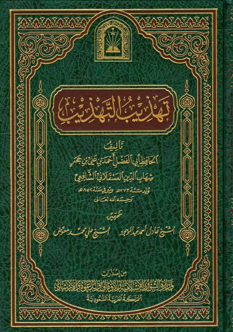
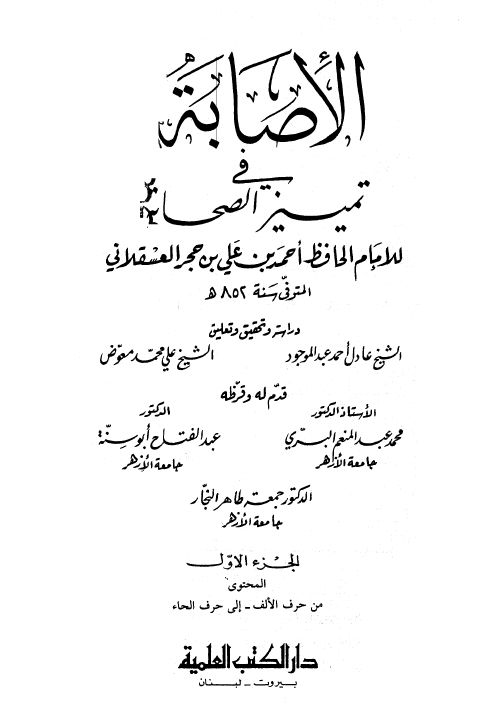
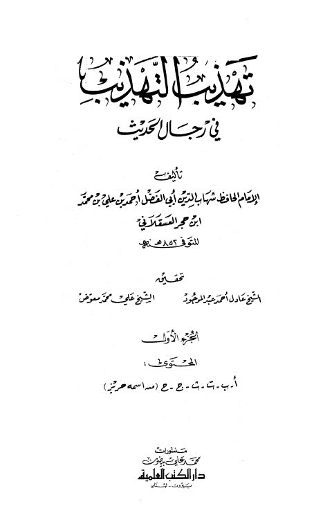
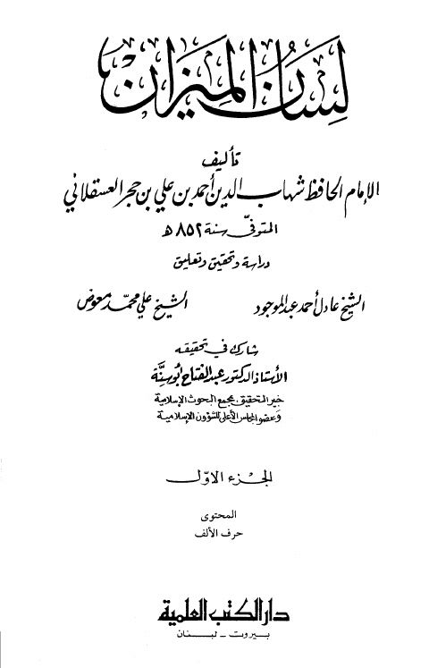
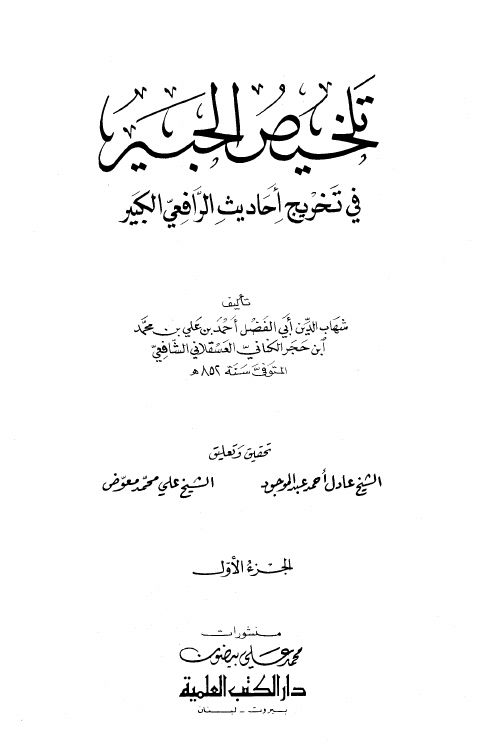
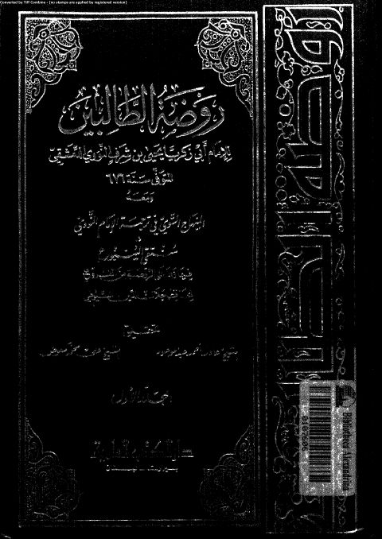
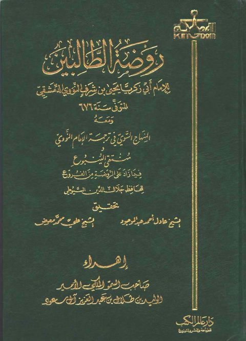

علي محمد معوض
Author
Resources

تهذيب التهذيب- ت العلمية تهذيب التهذيب- ت العلمية أحمد بن محمد بن علي بن حجر العسقلاني
الإصابة في تمييز الصحابة الإصابة في تمييز الصحابة أحمد بن علي بن حجر العسقلاني روضة الطالبي للنووي ومعه المنهاج السوي في ترجمة الإمام النووي
روضة الطالبي للنووي ومعه المنهاج السوي في ترجمة الإمام النووي
يحيى بن شرف النووي
روضة الطالبي للنووي ومعه المنهاج السوي في ترجمة الإمام النووي
روضة الطالبي للنووي ومعه المنهاج السوي في ترجمة الإمام النووي
يحيى بن شرف النووي

تهذيب التهذيب في رجال الحديث تهذيب التهذيب في رجال الحديث أحمد بن علي بن حجر العسقلاني
لسان الميزان- العلمية لسان الميزان- العلمية أحمد بن علي بن حجر العسقلاني
تلخيص الحبير في تخريج أحاديث الرافعي الكبير تلخيص الحبير في تخريج أحاديث الرافعي الكبير أحمد بن علي بن حجر العسقلاني
روضة الطالبين ومعه المنهاج السوي في ترجمة الإمام النووي ومنتقى الينبوع فيما زاد على الروضة من الفروع روضة الطالبين ومعه المنهاج السوي في ترجمة الإمام النووي ومنتقى الينبوع فيما زاد على الروضة من الفروع يحيى بن شرف النووي• جلال الدين عبد الرحمن السيوطي
روضة الطالبين ومعه المنهاج السوي في ترجمة الإمام النووي ومنتقى الينبوع فيما زاد على الروضة من الفروع روضة الطالبين ومعه المنهاج السوي في ترجمة الإمام النووي ومنتقى الينبوع فيما زاد على الروضة من الفروع يحيى بن شرف النووي • جلال الدين عبد الرحمن السيوطي